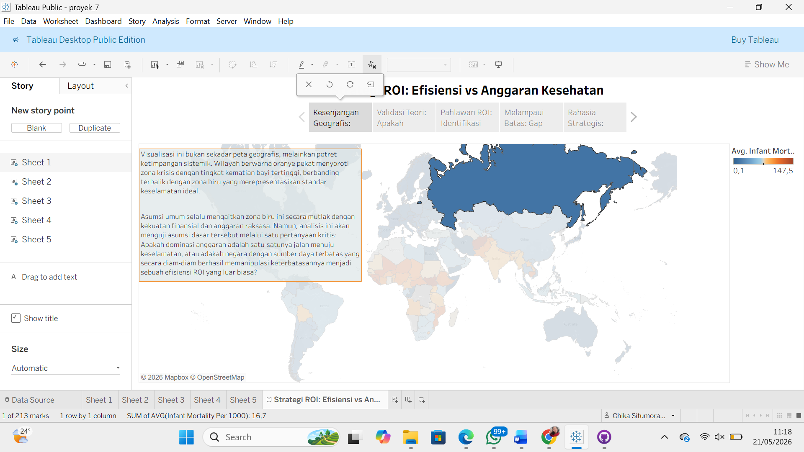

Tentang Saya
Halo! Saya adalah mahasiswa tingkat akhir Sistem Informasi di Institut Teknologi Del, saya tertarik dalam dua bidang yaitu Analisis Data (Data Analytics) dan Rekayasa Perangkat Lunak (Software Engineering).


Keahlian Teknis
Data Science & Analytics
Python, SQL, Tableau, Streamlit, Predictive Modeling (Ensemble), Data Storytelling, Data Mining.
Software Development
Laravel (PHP), HTML, .NET 8 (C# dasar), Blazor Server, Java, Basis Data Relasional, RESTful API.
AI & QA Testing
Multimodal AI, Fine-Tuning (PEFT/LoRA), Sistem Rekomendasi (ALS & IBCF), Katalon Studio (Automated QA).
Pengalaman Kerja
Product Analyst Intern
- Berkontribusi dalam pengembangan produk teknologi kesehatan (*HealthTech*) dengan melakukan analisis kebutuhan pengguna (*user requirements*) dan memetakan specifications teknis fitur produk.
- Melakukan analisis data produk untuk mengidentifikasi tren penggunaan, performa sistem, serta metrik operasional penting.
Proyek Unggulan
SIM Radiologi AI - Pemrosesan Asinkron
2026
Mengembangkan dashboard interaktif menggunakan Blazor Server untuk pemantauan antrean gambar medis secara otomatis. Mengimplementasikan .NET Background Service sebagai pipa pemrosesan data latar belakang non-blocking.
Analisis ROI Kesehatan Global
2026
Memproses dan menganalisis dataset kesehatan global makro untuk mengevaluasi tingkat pengembalian investasi (ROI) serta merancang narasi visual yang interaktif menggunakan Tableau dan Streamlit.
Aplikasi Web Manajemen SiNe & Restoran
2024Membangun platform manajemen komprehensif menggunakan framework Laravel dengan arsitektur MVC, yang mencakup penanganan data fungsional dan pengujian ujung-ke-ujung menggunakan Katalon Studio.
1. Sistem Informasi Anggota (SiNe IT Del) — [4 Screenshots]


2. Sistem Pemesanan Restoran & Katering — [4 Screenshots]


Adaptive Fine-Tuning Model Multimodal AI
2025-2026Melakukan fine-tuning model MedGemma menggunakan teknik PEFT berbasis LoRA untuk otomatisasi laporan radiologi dengan mengolah 4.000+ data citra medis di lingkungan High-Performance Computing (HPC).
Knowledge Graph Smart City Provinsi Sumut
2025Mengintegrasikan konsep Linked Data dan Knowledge Graph bersama komponen AI untuk memetakan serta menganalisis hubungan spasial risiko bencana urban secara mendalam.
Analisis Prediksi Harga Rumah (Advanced Regression)
2024Membangun arsitektur model regresi prediktif memanfaatkan algoritma ensemble (Random Forest, XGBoost, LightGBM) disertai optimasi parameter fungsional.
Sertifikasi & Penghargaan
Hubungi Saya
- 📧 Email: chikasitumorang004@gmail.com
- 💼 LinkedIn: linkedin.com/in/chika-situmorang
- 🐙 GitHub: github.com/chikastm17